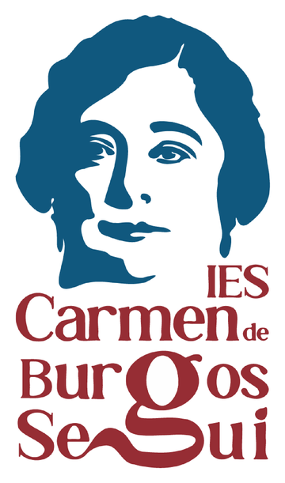

Realidad aumentada · IES Carmen de Burgos Seguí
Funciona en Android (Chrome) y en iPhone/iPad (Safari). Necesita conexión segura (https) y permiso de cámara.
«Colombine» · Almería, 1867 – Madrid, 1932
Escritora, periodista, traductora y maestra. Fue una de las primeras mujeres que se dedicaron profesionalmente al periodismo en España y cubrió como corresponsal la guerra de Melilla de 1909.
Firmó muchos de sus artículos como Colombine y defendió con su obra el derecho al divorcio, el sufragio femenino y la educación de las mujeres. Nuestro instituto lleva su nombre.